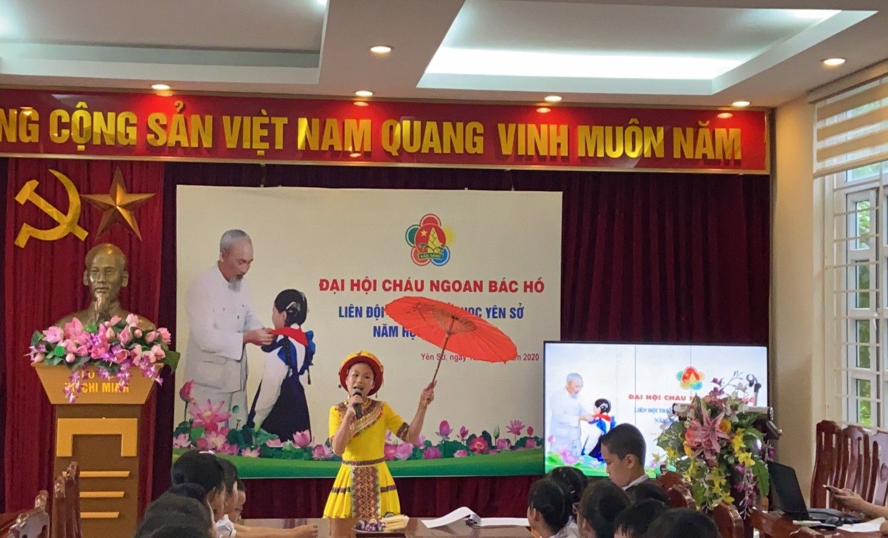
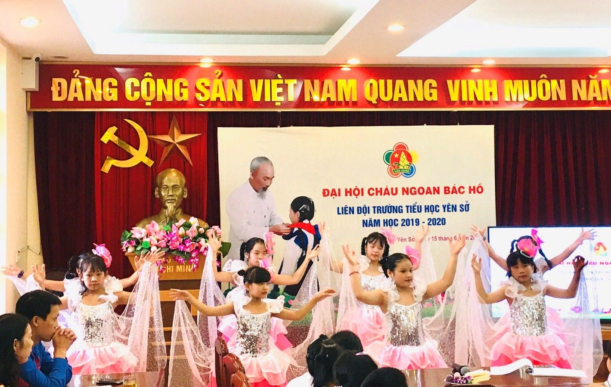
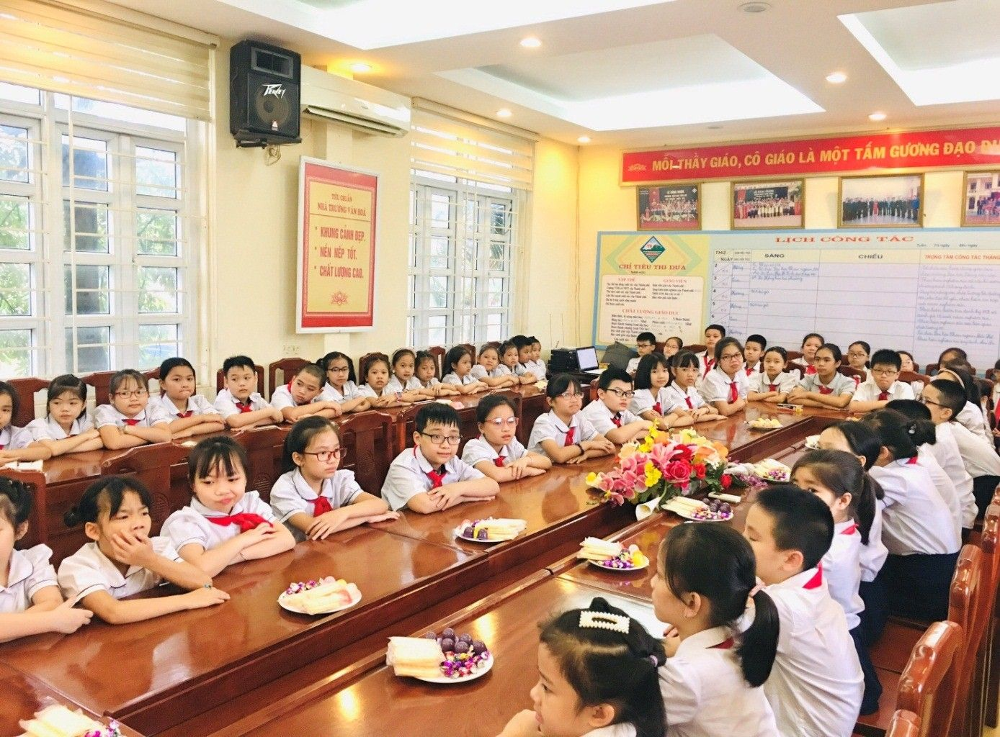
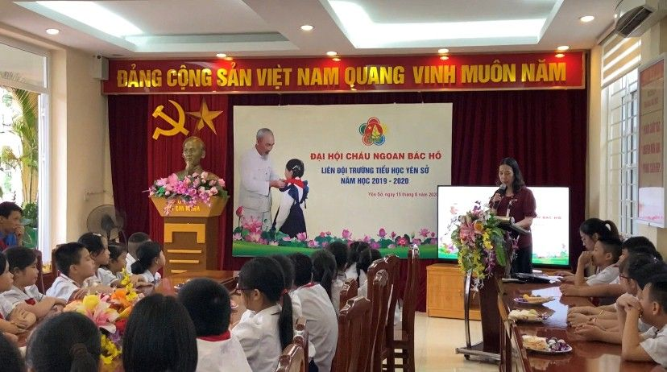
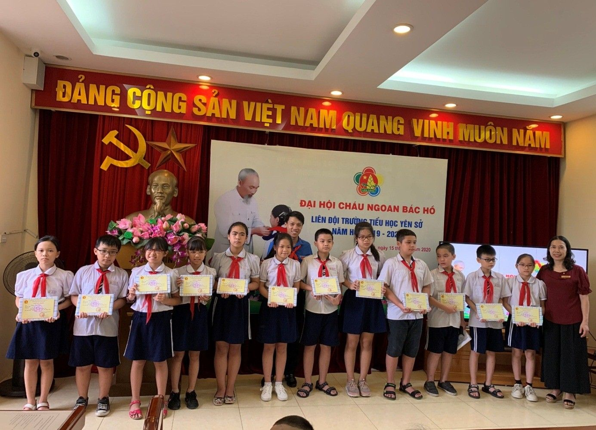

Liên đội trường Tiểu học Yên Sở tổ chức Đại hội Cháu ngoan Bác Hồ Năm học 2019-2020.
Trong muôn vàn tình yêu thương Bác Hồ dành cho nhân dân, có một tình yêu đặc biệt Bác dành cho thiếu niên, nhi đồng. Sinh thời, dù bận trăm công nghìn việc, Bác Hồ vẫn luôn quan tâm đến thiếu niên, nhi đồng. Hình ảnh của Bác Hồ luôn là nguồn cổ vũ, động viên trong mỗi việc làm, trong từng bài học, chắp cánh cho ước mơ cao đẹp của mỗi thiếu nhi Việt Nam. Để bày tỏ lòng kính yêu và biết ơn Bác Hồ, thiếu niên, nhi đồng Việt Nam đã luôn cố gắng học tập, rèn luyện thi đua lập thành tích để trở thành con ngoan, trò giỏi, tham gia nhiều phong trào đóng góp vào sự nghiệp cách mạng chung của nước nhà.
Hòa chung với không khí thi đua sôi nổi lập thành tích chào mừng kỷ niệm 130 năm ngày sinh nhật Bác Hồ và 79 năm ngày thành lập Đội thiếu niên tiền phong Hồ Chí Minh, Liên đội trường Tiểu học Yên Sở long trọng tổ chức Đại hội “Cháu ngoan Bác Hồ” nhằm tôn vinh những đội viên, nhi đồng xuất sắc tiêu biểu. Đây là những đoá hoa tươi thắm nhất trong vườn hoa nghìn việc tốt của thiếu niên, nhi đồng dâng lên mừng sinh nhật Bác và đồng thời cũng là dịp để Liên đội nhà trường báo cáo thành tích đã đạt được trong những năm vừa qua.
Đến dự đại hội Cháu ngoan Bác Hồ của Liên đội trường Tiểu học Yên Sở có đồng chí Nguyễn Văn Hùng - Phó bí thư quận Đoàn - Chủ tịch Hội đồng đội quận Hoàng Mai, cô giáo Nguyễn Thị Hồng - Bí thư Chi bộ - Hiệu trưởng nhà trường, các cô giáo khối trưởng và 60 bạn thiếu nhi, đội viên tiêu biểu từ các lớp, chi đội.
Mở đầu chương trình là những lời ca tiếng hát, những tình cảm của các em học sinh gửi đến Bác Hồ kính yêu. Sau phần Nghi lễ chào cờ và phút sinh hoạt truyền thống, cô Nguyễn Thị Hồng – Bí thư chi bộ - Hiệu trưởng nhà trường phát biểu khai mạc Đại hội.
Trong 5 năm qua, dưới sự quan tâm của nhà trường, sự dạy bảo ân cần của các thầy cô giáo, sự chăm lo của gia đình và toàn xã hội, các bạn đội viên, thiếu nhi đã phát huy truyền thống cách mạng của cha anh, phấn đấu dành nhiều thành tích xuất sắc trong học tập, rèn luyện. Tại đại hội, để ghi nhận những kết quả mà các em học sinh đã đạt được, Liên đội trường Tiểu học Yên Sở đã biểu dương và khen thưởng cho 40 bạn đội viên, thiếu nhi đại diện cho học sinh toàn trường.
Kết thúc đại hội là những lời hứa trong quyết tâm thư của em Lê Tường Linh chi đội 5A1 - đại diện cho các bạn đội viên. Các em nguyện phấn đấu tiếp tục thực hiện tốt phong trào “Thiếu nhi Việt Nam thi đua làm theo 5 điều Bác Hồ dạy” để trở thành con ngoan, trò giỏi, đội viên tốt, cháu ngoan Bác Hồ.
Dưới đây là một số hình ảnh của đại hội:

Tiết mục múa hát “Từ rừng xanh cháu về thăm Lăng Bác”
do bạn Bình An lớp 5A1 biểu diễn.

Tiết mục “Bay vào tương lai” do tốp múa biểu diễn.

Gương mặt 60 bạn đội viên, thiếu nhi ưu tú, xuất sắc.

Cô Nguyễn Thị Hồng – Bí thư Chi bộ, hiệu trưởng nhà trường phát biểu khai mạc Đại hội.

Đ/c Nguyễn Văn Hùng - Phó bí thư quận Đoàn - Chủ tịch HĐĐ quận Hoàng Mai và đ/c Nguyễn Thị Hồng – Bí thư Chi bộ - Hiệu trưởng nhà trường trao quà
và Chuyên hiệu Cháu ngoan Bác Hồ cho các bạn học sinh.